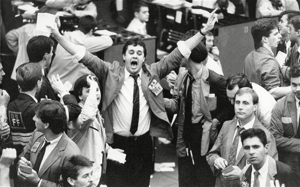

Social trading is not quite what you're used to. In some way everyone's aware of 'traders' — they're those guys wearing red braces or carrying oversized phones, driving expensive cars and generally looking rich. What exactly did they do to get all that money? Nobody really knew. It had something to do with money, phoning people, and shouting "buy!" and "sell!" in a strange building. And weird charts on computer screens.
Removing the Barriers to Entry
Along came the internet, and with it, social media. Everyone has a profile, everyone knows how to send each other messages, and look at their friend's 'Feed' or 'Wall' or whatever. We see what everyone's thinking and drinking, and eating, and taking photos of. It's designed to be social. Communal.

We all got used to these sites so quickly — we know how they work and what to do. And when the time was right, when internet speeds were fast enough, everyone was used to social media, and websites became complex enough, social trading was born. A mixture of social media and classical trading.
Trading Goes Social
Whilst it's social, it's still trading, so there's still a lot to learn and get familiar with. It would be a mistake to think that they've made the actual trading part easy — that's just about as difficult as it always was — the only difference is that now everybody has easy access to it.
"Democratising trading" is a slogan you might have heard, which is true, but it's also a bit of a cover — the 'exchanges' are still very much businesses, and having so many millions of new customers is a genius move on their part. They've opened it up for everyone, and made it all look very familiar.
Copy Trading — The Next Level
The next bit of genius was to leverage all that very clever computer power and high speed internet to let the little guy trade like the pros. What if you could browse through lots of different traders' profiles on one of these exchanges, check their statistics, see which ones you think are trading well, and then just set your account to automatically copy them? Wouldn't that be nice?
You can. When you find a trader who you think is good at what they're doing, you can simply press the big friendly "Copy" button, set an amount of money you'd like to copy them with, and hey presto, your account now makes all the trades they make. It's genius, and it's only possible because of the technology we have now.
Is Social Trading Safe?
No. Of course not — it's still trading. You can still lose money. If you meet someone who can guarantee they'll make you 'X' amount of profit, chances are you need to run as fast as you can. Nobody has a crystal ball.
Is it Regulated?
Social Trading is now such a huge and lucrative marketplace that companies can't exist if they're not regulated — meaning they have oversight from national and international financial authorities. It's probably best to steer well clear of any trading company which isn't regulated by legitimate authorities.
What are the Costs?
You have to credit your account with real money, but you're not charged by the person you're copying. They get incentives from the exchange — the more people who copy them, the more they get from the website owners. There are fees associated with Social Trading, as there are with all brokerages, but copying itself is free.
Ready to Learn More?
Check out the Copy Trading guide for a deeper look at exactly how it works in practice, or read about whether eToro is a scam — the first question I had when I found it.